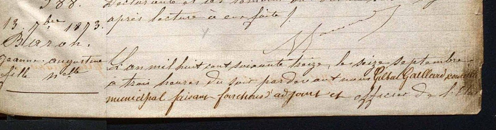

Acte d'état civil · 16 septembre 1873
Naissance de Jeanne Augustine (Baron), Clermont-Ferrand, 16 septembre 1873
Ce document établit
- Jeanne Augustine est née le 13 septembre 1873 à 23 h, à Clermont-Ferrand, au domicile de l'accoucheuse, 5 rue Montlosier. vérifié A0001
« un enfant du sexe féminin né dans son domicile le treize du courant, à onze heures du soir »
- La naissance est déclarée le 16 septembre 1873 par Anne Fontbonne, veuve Chassaigne, accoucheuse, déclarée âgée de 37 ans, rue Montlosier n°5. vérifié A0002
« a comparu Dame Anne Fontbonne, veuve Chassaigne, accoucheuse, âgée [de] trente sept ans »
- L'acte de 1873 désigne comme mère « Anne Baron, célibataire, âgée de vingt-cinq ans, native de Lyon (Rhône) y demeurant ». vérifié A0003
« Le dit enfant né d'Anne Baron, célibataire, âgée de vingt-cinq ans, native de Lyon (Rhône) y demeurant »
- L'acte de naissance de 1873 ne nomme aucun père. vérifié A0004
- Témoins de l'acte de 1873 : Jean Fauchet [lecture incertaine], serrurier, 50 ans, et Antoine Bayle, maçon, 39 ans, non parents de l'enfant, ne sachant signer. vérifié A0005
- Mention marginale de 1897 : Jeanne Augustine Baron a été adoptée par Anne Louise Angélique Marchal, épouse Orsay, par arrêt de la cour d'appel d'Orléans du 17 mars 1897, transcrit à Tours le 15 avril 1897 ; mention faite le 22 avril 1897. vérifié A0006
- L'accoucheuse de 1873 est une femme, Anne Fontbonne veuve Chassaigne, et non un « Dr Fontbonne » comme l'indique la note de l'arbre. vérifié A0007
- L'acte de 1873 donne 37 ans à la sage-femme, qui en avait 42 (née en 1831) : les âges déclarés dans ces actes peuvent être faux de plusieurs années. vérifié A0072
- L'identité de la mère de Jeanne Augustine n'est pas établie. non résolu A0080
- Le père de Jeanne Augustine n'est pas identifié. recherche infructueuse A0081
- La naissance du 13/09/1873 à Clermont-Ferrand concorde entre l'acte de naissance (A0001 : née le 13/09/1873 à 23 h ; déclarée le 16/09) et l'acte de décès de 1922 ; le 16/09/1873 est la date de la déclaration et non de la naissance. vérifié A0350
Ce document contredit
- Naissance : Jeanne Augustine est née au domicile du Dr Fontbonne, accoucheuse, 5 rue Montlozier à Clermont-Ferrand. Selon son acte de naissance, son père est inconnue et sa mère est Anne BARON, "agée de 25 ans, habitante et native de Lyon". (Clermont-Ferrand, Puy-de-Dôme) — selon l'arbre transmis contredit AR0026
« Dame Anne Fontbonne, veuve Chassaigne, accoucheuse »
- Événement : Jeanne Augustine est adoptée le 17 Mars 1897 (24 ans) par sa "tante" Anne Louise Angelique MARCHAL, épouse de Louis Edouard ORSAY. — selon l'arbre transmis contredit AR0027
Transcription
dossier/preuves.md#A1
Personnes concernées
Avec mention marginale d'adoption (22 avril 1897).